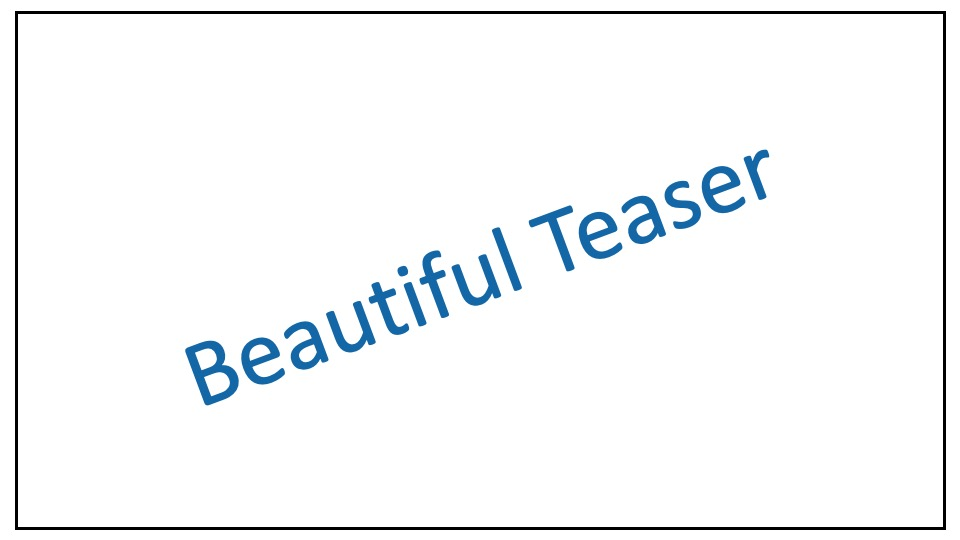

Of Moments and Matching: A Game-Theoretic Framework for Closing the Imitation Gap
Published at ICML 2021
1 Robotics Institute, CMU
2 Aurora Innovation
3 Institute for Software Research, CMU

Under construction.
Abstract
This is my abstract.
Video
Method Overview

[Code]
Results

Paper

Of Moments and Matching: A Game-Theoretic Framework for Closing the Imitation Gap
Gokul Swamy, Sanjiban Choudhury, J. Andrew Bagnell, Zhiwei Steven Wu
In Conference, 20XX.
@InProceedings{swamy2021moments,
title = {Of Moments and Matching: A Game-Theoretic Framework for Closing the Imitation Gap},
author = {Gokul Swamy and Sanjiban Choudhury and J. Andrew Bagnell and Zhiwei Steven Wu},
booktitle = {Proceedings of the 38th International Conference on Machine Learning},
year = {2021},
}Acknowledgements
This template was originally made by Phillip Isola and Richard Zhang for a colorful ECCV project, and adapted to be mobile responsive by Jason Zhang. The code can be found here.